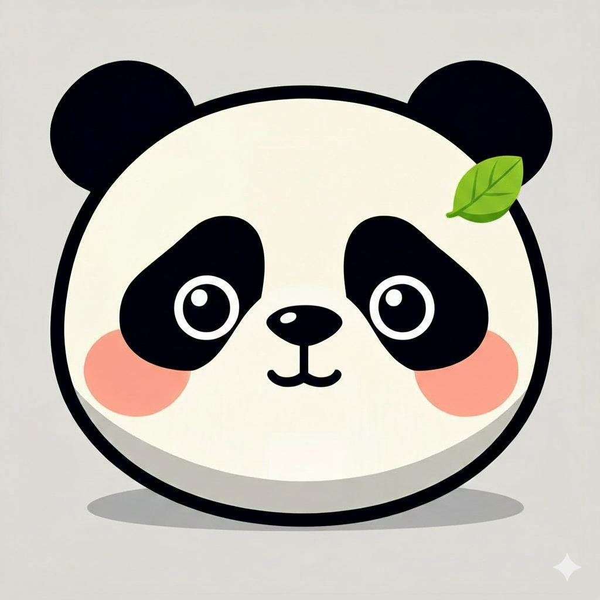
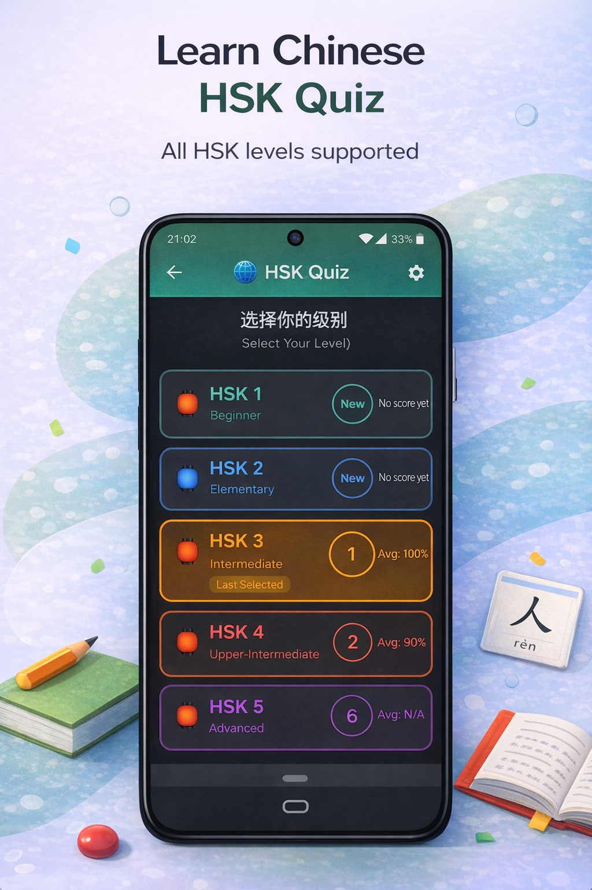
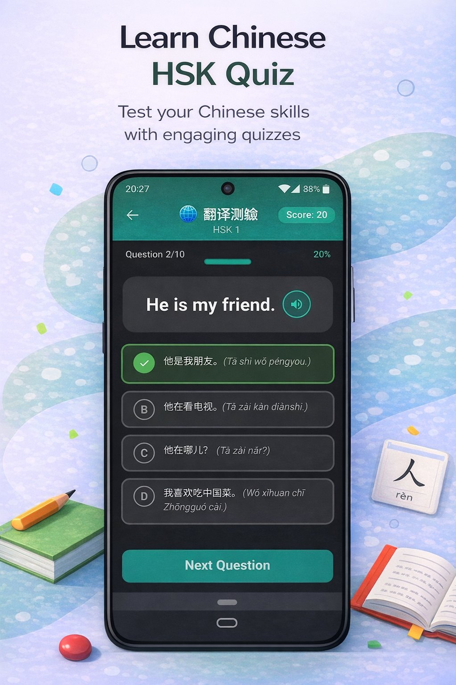
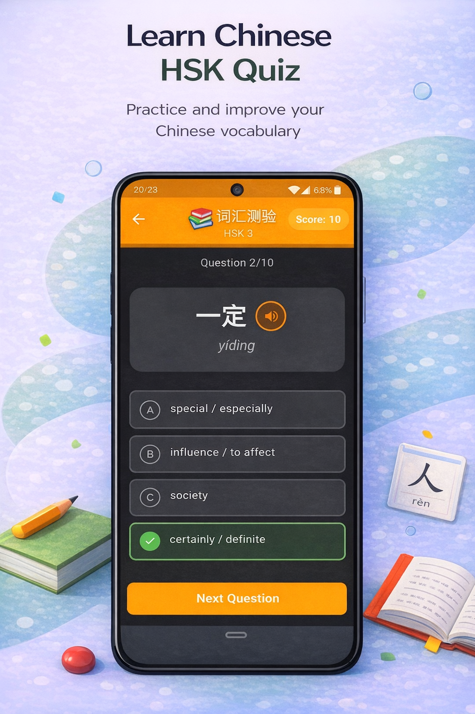
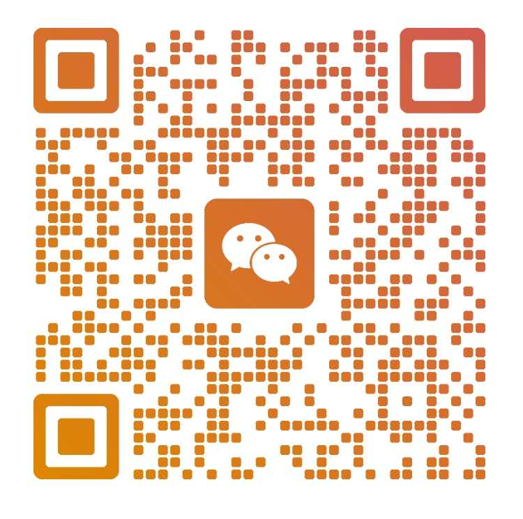

A fun Android study app for international students at Kunming University of Science and Technology. Join the closed test, install it, and use it for quick, useful practice with vocabulary, pinyin, translation, and sentence patterns.
这是一款面向昆明理工大学国际学生的安卓中文学习应用。加入封闭测试后，你可以用更轻松的方式练习词汇、拼音、翻译和句型，也能更自然地准备 HSK。

HSK Quiz App is meant to feel like quick, low-pressure practice rather than homework. It fits naturally into student life, whether you want a short review between classes, in the dorm, or before an HSK exam.
HSK Quiz App 更像是轻松、没有压力的小练习，而不是额外作业。无论是课间、宿舍，还是 HSK 考试前，你都可以随时花几分钟做一次中文复习。
These screens give students a quick feel for the app before they install it: level selection, translation quizzes, and vocabulary practice.
这些截图可以让学生在安装前快速了解应用的感觉：等级选择、翻译测验，以及词汇练习界面。

Translation quiz 翻译测验
Vocabulary practice 词汇练习This closed test is currently available only for Android phones. iPhone and iPad users cannot join this version of the test yet.
当前封闭测试仅支持 Android 手机。iPhone 和 iPad 用户暂时无法加入这一次的测试。
WeChat cannot open the Google links, please use your browser and VPN. Please join the tester group before opening the Google Play testing link.
微信无法打开 Google 链接，请使用浏览器并连接 VPN。请先加入测试群组，再打开 Google Play 测试链接。
This is more than a test link. It is a chance to use a practical Chinese-learning tool while helping shape something genuinely useful for international students studying at KUST.
这不仅仅是一个测试链接，也是一次体验实用中文学习工具的机会，同时帮助我们把它打磨成更适合昆明理工大学国际学生的应用。
Use these ready-made materials for WeChat sharing, posters, and simple install guidance.
你可以使用这些现成素材进行微信分享、海报展示或安装说明。
WeChat contact: joaoferna
Scan the QR code below to add me on WeChat.

微信联系方式：joaoferna
扫描下面的二维码即可添加我的微信。
{kind=link}
{kind=link}